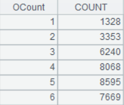

Description:
Split a low-frequency categorical enumerated sequence variable that contains a number of categories not greater than 6 into multiple binary variables during modeling.
Syntax:
|
A.bi() |
During modeling, split low-frequency categorical enumerated variable A that contains a number of categories not greater than 6 into multiple binary variables, and return a binary sequence consisting of a table sequence of splitting result and a sequence of splitting process records Rec. |
|
A.bi@r(Rec) |
During scoring, split low-frequency categorical enumerated variable A that contains a number of categories not greater than 6 into multiple binary variables according to the sequence of splitting process records Rec, and return result as a table sequence. |
Note:
The MathCli external library function (See External Library Guide) splits a low-frequency categorical enumerated sequence variable that contains a number of categories not greater than 6 into multiple binary variables during modeling.
Parameter:
|
A |
A sequence, which is a low-frequency categorical enumerated variable that contains a number of categories no greater than 6. |
|
Rec |
A sequence of splitting process records. |
Return value:
Sequence/Table sequence
Example:
|
|
A |
|
|
|
1 |
=T("D://house_prices_train.csv") |
|
|
|
2 |
=A1.(MSZoning) |
A variable containing a number of categories no greater than 6. |
|
|
3 |
=A2.bi() |
A3(1) A table sequence of splitting result; A3(2) A sequence of splitting process records Rec. |
|
|
4 |
=A2.bi@r(A3(2)) |
 Split A2¡¯s variable into multiple variables according to A3¡¯s sequence of splitting process records Rec. |
|